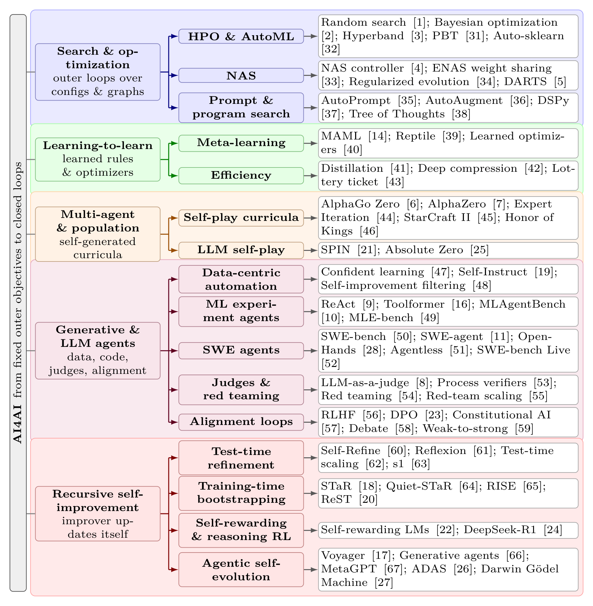
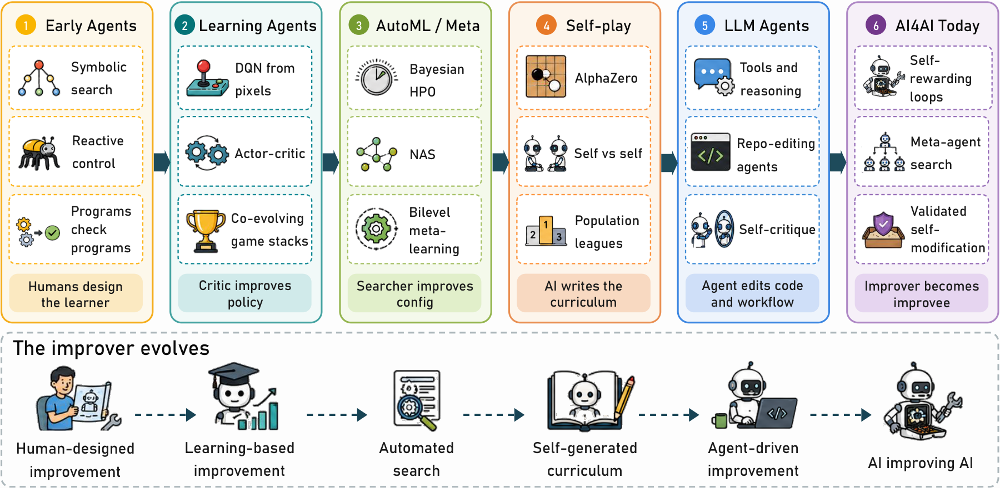
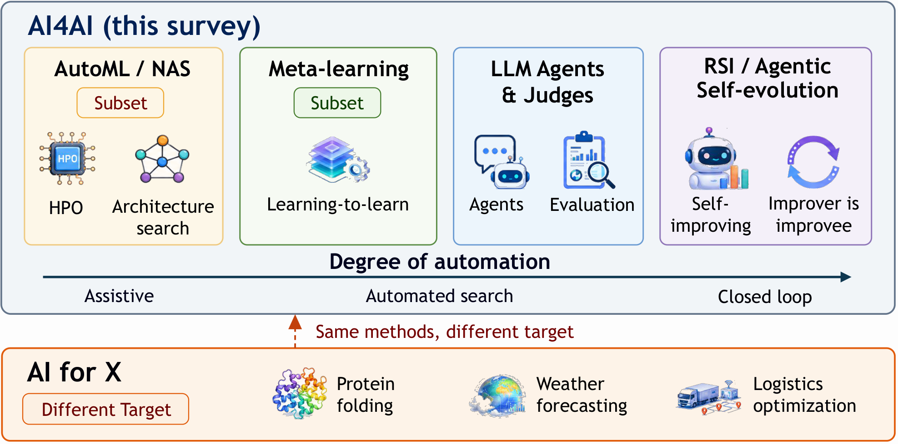
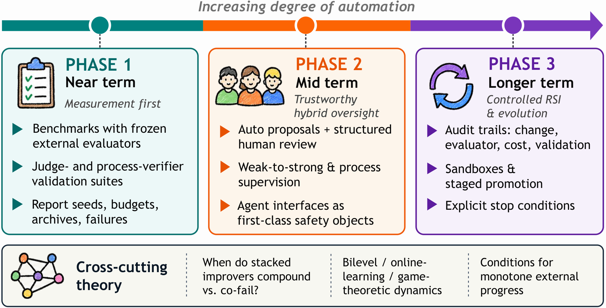

1Introduction
Machine learning (ML) often starts with objectives, architectures, and evaluation protocols designed by people. Algorithms then fit parameters within those choices. Algorithms can also help make the choices themselves. Random search 1, Bayesian optimization 1, and bandit schedulers 1 select training settings. Neural architecture search (NAS) 1,1 searches for computational graphs. Self-play 1,1 creates training curricula through games against copies of the learner. Model-based judges 1 score open-ended outputs. Language-model agents write training code, prompts, and repository patches 1,1,1. What these systems share is a common relation: an improver acts on an improvee. The improver may be a searcher, a meta-learner, a critic, a population, or an agent. The improvee may be a model, a dataset, a prompt, a workflow, a safety filter, or the improver's own tools, memory, or code. When the target includes its own tools, memory, or code, the improver also becomes the improvee.
We call the study of this relation AI for AI (AI4AI): the use of learned components or automated search to guide changes to AI systems and the artifacts used to build and assess them. The definition describes the aim and structure of a method. Whether it produces a gain is a separate question for evaluation. It is broader than classical automated machine learning (AutoML) 1,1, which often focuses on pipeline configuration and architecture search. Here we use “AI for X” for applications whose targets lie outside AI systems, such as science, medicine, and logistics. It includes meta-learning over a task distribution 1,1, but many AI4AI systems never see such a distribution and still couple an outer controller to an AI artifact through search, synthetic data, judgment, or self-play. A useful test is to identify the AI artifact being changed, the component guiding that change, and the feedback used to choose or train the result. A better answer to one task alone does not establish a change to the AI system.
The ingredients are not new one by one. Bayesian optimization of training choices, self-play in games, and bilevel meta-learning are mature lines. What has changed is composition and reach. Large language models (LLMs) turn natural language and code into an open action space: agents can edit experiments 1, call tools 1, revise traces 1, and maintain skill libraries 1 without a hand-designed NAS cell set. In parallel, training-time loops let models generate, filter, and learn from their own data. STaR-style rationale bootstrapping 1, self-instruct data generation 1, and reinforced self-training 1 use model outputs to train a learner. Self-play fine-tuning 1, self-rewarding preference optimization 1,1, and reasoning reinforcement learning (RL) under verifiable rewards 1,1 extend this line. These methods provide settings in which to study recursive self-improvement (RSI). Gains on a task do not by themselves show that a model has become better at improving its successors. On the systems side, meta-agents that search over agent programs 1, coding agents that modify their own scaffolding 1, and repository-level software agents 1,1 move the target from weights to workflows. These developments return to older questions about machines that improve their own problem-solving ability 1,1, but under empirical validators (benchmarks, unit tests, sandboxes) instead of proof obligations. The practical risk is clear: when the judge, the data generator, and the policy share failure modes, reported gains can compound without external validity 1.

A second reason for a unified treatment is to connect work from different research communities. Section 2 traces several traditions that predate foundation models. Early agents separated a decision mechanism from its output 1,1. RL used learned values to guide policy updates 1,1. AutoML and meta-learning made outer and inner loops explicit 1,1. Self-play supplied training experience through interaction with other copies of the learner 1,1. LLM agents and contemporary self-improvement methods inherit that stack and widen its action space. Treating them as a break with AutoML or RL hides both what is new (open-ended program actions, model-based evaluation at scale) and what is continuous (nested objectives, self-generated data, evaluator brittleness).
Scope. We include methods in which a learned component or automated search guides changes to an AI artifact or process. The list spans configuration search, architecture and prompt search, meta-learning, data-centric automation, self-play, agents for ML engineering, and model-based feedback used in training or system revision. We discuss general software agents and test-time reasoning as supporting methods. They enter the core scope when they change an AI system or a reusable part of it. Fixed human recipes with neither model-based guidance nor search over alternatives remain ordinary ML engineering 1. Detailed boundary cases and relations to adjacent fields are developed in Section 3.
Review approach. This narrative review covers selected work available by 6 September 2026. We use representative methods to compare the artifact changed, the feedback source, and the role of the improver. We include preprints where they describe recent mechanisms. The selection supports comparisons across traditions and does not provide a complete count of work in each area. Recent surveys cover self-evolving agents 1 and long-horizon AI4AI workflows 1. Our focus is the link between classical improvement methods and current agent systems, including the limits of treating them as instances of the same relation.
Contributions and organization. This survey makes four contributions. First, we trace the links among earlier research traditions (Section 2) and explain how they use feedback to improve AI components. Second, after placing the definition relative to AutoML, meta-learning, and AI-for-X (Section 3), we introduce a four-axis taxonomy (lifecycle stage, improvement target, automation degree, and method family) as a coordinate system for the converged field (Section 4). Third, we review contemporary threads at mechanism level (Section 5), including evaluation- and alignment-as-improver settings, and dedicate a section to recursive self-improvement and agentic self-evolution (Section 6). Fourth, we organize open challenges and a staged roadmap around evaluator validity, cost accounting, reproducibility, safety under recursion, and controllable automation (Sections 7 and 8). Throughout, we focus on how methods work: what is proposed, what is evaluated, and what artifact changes. Figure 1 previews the topics and their supporting methods.
2Historical Lineage: How AI4AI Became Thinkable

Figure 2 groups six strands of research. We ask what each strand made possible and which evaluation problems it raised. These strands overlap in time. Samuel's checkers program already learned through self-play in 1959 1. Throughout, we emphasize mechanisms: what the outer loop proposes, what the inner loop evaluates, and which artifact is improved.
2.1From Agents to Self-Generated Learning
Long before gradient-based deep learning, AI was organized around agents that map percepts to actions in pursuit of goals 1. Symbolic planners and heuristic search automated multi-step problem solving by constructing plans or proofs. This is a useful analogy, although the output was usually not an AI system. Behavior-based and reactive architectures 1 inverted the emphasis, composing situated controllers that responded to local sensory conditions without a heavy symbolic world model. In both cases, the field already distinguished a decision mechanism from the artifact it produced. What it largely did not do was treat the design of another learning system (its architecture, data diet, or evaluation protocol) as the object of that decision mechanism. Software automation (compilers, tests, continuous integration) established a related precedent outside ML: programs that transform and validate other programs. These traditions provide a starting point for asking what happens when the object being improved is itself a learner.
Reinforcement learning 1 made improvement internal to the learner. A policy interacts with an environment and learns from returns. In actor-critic methods, a learned value estimator guides the policy update. The critic is already an AI component improving another AI component, even when textbooks present the pair as a single algorithm. Deep Q-Networks 1 trained an action-value function from pixels using replay and a target network. The control policy is derived from that function. We treat this as background on learned feedback, not as a separate outer controller that redesigns a learner. Hierarchical RL and learned reward models deepen the coupling by inserting additional learned modules between raw experience and the final policy, as in feudal hierarchies 1 and sample-efficient hierarchical agents for open-ended environments 1. Large game-playing systems 1,1 combine imitation, RL fine-tuning, distillation, and evaluation in one training system.
For AI4AI, RL contributes more than algorithms. It contributes a methodological stance: training distributions can be non-stationary, evaluation must track a moving agent, and experience can substitute for hand-written rules, premises that later reappear in self-play, synthetic data, and RSI. Proposals for machines that improve their own problem-solving ability 1,1 predate deep learning. Many current systems use empirical tests where earlier formal proposals required proofs.
2.2Outer-Loop Search: AutoML, NAS, and Meta-Learning
As deep networks multiplied, configuration became a first-class bottleneck, and the community responded by making the outer loop explicit. Hyperparameter optimization (HPO) treats training choices as a black-box optimization problem. An outer searcher proposes a configuration \(x\), and an inner training run returns a validation score \(f(x)\) used to select candidates. Random search 1 can work well when only a few hyperparameters strongly affect performance. It tries more distinct values on those dimensions than a grid with the same number of trials. Its sampling rule need not learn from earlier scores. Bayesian optimization (BO) 1,1 maintains a probabilistic surrogate, commonly a Gaussian process or a Tree-structured Parzen estimator, and selects the next trial via an acquisition function (e.g., expected improvement) that balances exploration of uncertain regions against exploitation of predicted peaks. Hyperband 1 treats HPO as a resource-allocation problem with early stopping. Many configurations receive small budgets, and only promising ones receive more resources.
Population Based Training (PBT) 1 goes further by interleaving training and search: a population of models trains in parallel, periodically copying weights from stronger peers and perturbing hyperparameters, so the outer loop modifies both configuration and checkpointed parameters online. Full-pipeline systems 1 such as Auto-sklearn 1 search over model families, preprocessors, and ensembles under a time budget. They use experience from past datasets to choose promising initial configurations. The searcher guides changes to the learner's configuration. Validation performance is the goal, subject to a compute budget.
NAS 1 applies similar outer and inner loops to computational graphs. Early work 1 trained an RL controller to sample architecture strings. Each child network was trained and evaluated. Validation accuracy supplied the controller's reward. The nested cost is severe, which motivated weight sharing: ENAS 1 trains a single over-parameterized supergraph and samples subgraphs as architectures, amortizing inner-loop training across candidates. Regularized evolution 1 selects a strong parent from a sampled group, mutates its architecture, and removes the oldest member of the population. This age-based removal distinguishes it from simply discarding weak candidates. DARTS 1 relaxes discrete architecture choices into continuous weights \(\alpha\) over candidate operations. Network weights \(w\) are trained on training data, while \(\alpha\) is updated using validation loss. Approximate alternating gradient steps solve the resulting bilevel problem. Related search formulations appear in automated augmentation 1 and discrete prompt search 1. Across these methods, what is improved is inductive bias (the graph, the augmentation distribution, or the prompt) rather than weights alone.
Meta-learning 1 pushes the outer loop from configuration search into the learning rule itself. MAML 1 learns an initialization \(\theta\) that supports fast adaptation to a sampled task. The outer objective measures validation loss after a few inner gradient steps and differentiates through those steps. First-order approximations such as Reptile 1 avoid full second-order differentiation by repeatedly moving \(\theta\) toward task-adapted parameters, retaining much of the benefit at lower cost. Learned optimizers 1 replace hand-designed update rules with a parameterized optimizer trained across tasks, so the improver is itself a network that emits weight updates. Relative to black-box HPO, the improver here is amortized: after meta-training, adaptation to a new task is cheap, but success depends on the coverage of the task distribution. These methods made improvement across tasks and training runs an explicit design goal. Classical search also extended to learning algorithms, as in AutoML-Zero 1. LLM experiment agents further widen the range of code edits that can be proposed, although evaluation remains costly.
2.3Closed Loops: Self-Play, Language Agents, and Recursion
Self-play 1,1,1,1 closes the outer loop without a human-specified task curriculum. In AlphaGo Zero and AlphaZero-style training 1,1, a shared policy and value network \(f_\theta\) supplies move priors and value estimates. Monte Carlo tree search uses them to produce a search policy \(\pi\). The network is then trained to match \(\pi\) and predict the game outcome. The opponent is a copy or historical snapshot of the learner, so the data distribution is generated by AI and shifts as competence rises. Expert Iteration 1 makes the same structure explicit as an outer “expert improvement” loop (search produces targets) and an inner “apprentice learning” loop (the network fits those targets). In self-play, the opponent distribution changes while the game rules and win condition can remain fixed. This can support continued learning, but also creates path dependence and strategy cycling. Frozen reference opponents help keep evaluation comparable. Large multi-agent systems 1,1 amplify the same structure across teams and draft spaces. Competitive generalization arenas 1 help test how learned policies perform beyond their training opponents. Self-play links classical RL to current self-improvement methods. Interaction between learners supplies a curriculum, but also makes evaluation depend on the opponents. Related questions arise in self-play fine-tuning of LLMs 1.
LLM agents change the action space of the outer loop. Chain-of-thought prompting 1 can improve multi-step answers through intermediate reasoning tokens without weight updates. Tree of Thoughts 1 searches over branching reasoning states. ReAct 1 interleaves those thoughts with tool calls, writing observations back into context so that reasoning conditions actions and actions ground reasoning. Toolformer 1 self-supervises API use by inserting candidate tool calls into corpora and fine-tuning on those that reduce perplexity, an improver that teaches the improvee (the same language model) when to call tools. HuggingGPT-style systems 1 use an LLM to plan calls to specialized models. CAMEL 1 and MetaGPT 1 give agents roles and procedures for working together. We discuss these as building blocks for systems that later revise reusable code or workflows.
ML-engineering 1,1 and software agents 1,1,1 extend the pattern to repositories: the improver edits code, launches runs or tests, reads logs, and revises hypotheses under a task reward. Unit-test feedback 1 can guide code-model training, although the detail of the reward depends on the test and feedback design. Self-Refine 1 revises outputs with model feedback. Reflexion 1 also stores reflections for later trials. Both keep model weights fixed. Related work scales deliberate inference compute beyond parameter counts alone 1,1,1. At this point improver and improvee often share a model family: the same LLM may propose an experiment, judge an output, and later be fine-tuned on the resulting data.
Recent work uses these building blocks to train models and revise agent designs. STaR, Self-Instruct, ReST, and self-rewarding methods 1,1,1,1 use generated data for learning. They differ in whether an updated model is used to produce the next round of data. On the systems side, Automated Design of Agentic Systems (ADAS) 1 meta-agents search over agent programs stored as code, and Darwin Gödel Machine (DGM)-style systems 1,1 self-modify coding agents under empirical benchmark validation. We take this convergence (outer-loop optimizers acting on AI artifacts, sometimes including themselves) as the defining core of contemporary AI4AI. Section 4 maps the design space. Section 5 reviews current uses, and Section 6 examines self-improvement and agentic evolution.
3Scope and Positioning
A method is in scope when a learned component or automated search guides changes to an AI artifact or process. Examples include Bayesian optimization over training hyperparameters 1, differentiable NAS 1, agents that edit training scripts 1, and meta-agents that rewrite workflows 1. Predicting weather or folding proteins with a neural network is AI for science, not AI4AI, unless the system is specifically improving another learner. A fixed training recipe without model-based guidance or search over alternatives is ordinary ML engineering 1. A learned scheduler is in scope. Random search also qualifies through evaluation and selection, even though its sampling rule stays fixed. Ordinary fitting of model parameters under a fixed loss is not by itself an outer improvement process.

Figure 3 summarizes adjacent relations. AutoML 1,1 remains a mature subset centered on configuration and search. Meta-learning 1,1 contributes bilevel adaptation machinery but does not cover all of AI4AI, much of which never sees an explicit task distribution. Self-improvement 1,1 and agentic evolution 1,1 add changes to the learner or agent across rounds. Whether they also improve the process that produces later changes requires further evidence.
Two clarifications help avoid category errors. First, sharing a model family between improver and improvee is neither necessary nor sufficient for membership: a Gaussian-process searcher improving a convolutional network is AI4AI, whereas an LLM answering medical questions is not, unless it is revising another learning system. Second, model-based evaluation and alignment count when their feedback is used to change an AI system. Examples include reward models in reinforcement learning from human feedback (RLHF) 1 and constitutional AI feedback 1. Judges 1 and red-teaming tools 1 can supply such feedback, but scoring or finding a failure alone does not establish an improvement. The unit of analysis is a system in a stated setting. A software agent belongs to AI4AI when it revises AI code or tools. A method that only revises a task answer is supporting work unless the result changes a reusable model, prompt, memory, or workflow.
4A Multi-Axis Taxonomy
Comparison across these traditions needs shared coordinates. We use four axes (Figure 4). The axes describe a system in a stated setting. A system may have several labels on an axis or change labels as it moves from data filtering to training and evaluation.

Lifecycle stage locates whether improvement targets data, architecture or programs, training dynamics, evaluation, deployment, or monitoring. AutoAugment 1 acts on the data pipeline, DARTS 1 on the computational graph, and LLM-as-a-judge 1 at evaluation. Using a judge and improving the judge are distinct operations.
Target of improvement names the object being changed: a model, dataset, compute setting, evaluation protocol, safety component, or agent code and workflow 1,1. The desired outcome, such as accuracy, lower cost, or fewer harmful responses, is recorded separately. A safety target may be a reward model or filter, while safety gains still need to be measured.
Automation degree records human involvement in proposing, running, evaluating, and accepting changes. Assistive tools leave some of these steps to people. Automated search can perform them under a fixed goal. The closed-loop label in Figure 4 adds a separate property: updates feed back into the system producing later changes, as in self-rewarding 1 or code-level self-modification 1. Such loops can retain fixed goals and human approval. Automation alone does not imply self-improvement or RSI.
Method family groups black-box search and Bayesian optimization 1,1,1, gradient or evolutionary architecture search 1,1, learning-to-learn 1,1, generative and LLM-agent methods 1,1, and multi-agent or population-based schemes 1,1,1. Methods can be combined. An LLM agent may call Bayesian optimization as a tool, and a meta-agent may evolve prompts that invoke critics. Composition is increasingly the default in systems that edit repositories, launch experiments, and revise plans under mixed numeric and natural-language feedback 1,1.
As a worked illustration, consider an ML-engineering agent 1 that proposes hyperparameters, edits training code, and asks an LLM judge 1 to compare runs. On our axes it acts mainly at training, changes training code and configurations, and uses generative-agent methods. Its goals include model quality and developer productivity. Its automation depends on which steps need human approval. AlphaZero-style self-play 1 acts at training and evaluation, changes a policy and its training distribution, and uses self-updating search and self-play. The taxonomy allows comparisons across systems that share some properties but differ on others.
5Contemporary Threads
The mechanisms introduced in Section 2 remain active research areas. This section organizes how they appear in current practice.
5.1Configured Learners: HPO and AutoML Systems
Production AutoML still typically implements fully automated search over training configuration under a compute budget 1,1,1,1,1. The outer loop proposes configurations, and the inner loop trains and scores them. Early-stopping schedulers such as Hyperband 1 cut wasted inner-loop compute. PBT 1 additionally moves the search online, mutating hyperparameters during training itself. Auto-sklearn 1 uses past datasets to select starting configurations. This does not require the search algorithm to rewrite itself. These systems act at training, target model configurations, and can use fully automated search to improve model quality. Their persistent limitation is action-space rigidity: once improvement requires editing arbitrary training code or tooling, fixed search spaces become awkward, which is the niche LLM experiment agents 1,1,1 occupy.
5.2Searchable Inductive Biases: NAS, Prompts, and Programs
NAS 1,1 and prompt search 1 extend the improvee from weights to graphs and natural-language control programs. In DARTS-style search 1, validation gradients guide a continuous mixture over operations. Discrete choices from that mixture define the final architecture. AutoPrompt 1 instead treats discrete trigger tokens as the improvee and uses gradient-guided search over the vocabulary to maximize a task likelihood. DSPy 1 extends this idea to programs built from language-model calls. A compiler uses examples and a metric to improve prompts and demonstrations within the given program structure. Tree of Thoughts 1 treats intermediate thoughts as nodes in an explicit search tree, with heuristics for expansion, evaluation, and selection, test-time search as an improver over reasoning traces. Architecture and prompt search change reusable parts of an AI system. Search over a single reasoning trace is a related test-time method, as distinguished in Section 3.
5.3Meta-Learning and Amortized Adaptation
Meta-learning 1,1,1,1 remains the structured alternative when a task distribution is available. The learned initialization or optimizer guides the task model through a few inner updates. The outer objective measures performance after adaptation. Compared with black-box HPO, meta-learning amortizes outer-loop cost into a representation that transfers, but it can be brittle outside the meta-training distribution, a limitation that motivates hybrid systems in which LLM agents propose task-specific adaptations that meta-learners alone would not enumerate.
5.4Data-Centric Automation
Data-centric automation 1 treats datasets as the improvee. Confident learning 1 estimates label errors from predicted probabilities. AutoAugment 1 learns augmentation policies through an outer RL loop. Self-Instruct 1 and filtered self-generation 1 build instruction or solution datasets from model outputs. In closed loops, today's generations become tomorrow's training data, so data-centric AI4AI is tightly coupled to RSI risk: errors can compound unless filters and external validators remain strong.
5.5Efficiency: Distillation, Pruning, and Compression
Distillation 1 trains a student to match a learned teacher. It fits the definition because the teacher supplies model-based guidance to another model. Pruning and compression 1,1 enter the core scope when a learned component or search selects masks, schedules, or bit-widths. Fixed compression rules serve as background methods.
5.6Self-Play and Population Curricula
Self-play 1,1,1,1,1 and population training 1 continue to supply self-generated curricula in games and broader multi-agent settings. One generation of agents defines the training distribution for the next. Evaluation tools, offline game datasets, and frozen opponents help assess progress 1,1. Recent LLM analogues such as SPIN 1 and Absolute Zero 1 recast these dynamics for preference optimization and reasoning (Section 6).
5.7LLM Agents for ML and Software Engineering
ReAct-style tool use 1,1, repository-level experiment agents 1,1,1, and execution-guided code improvement 1 jointly extend AutoML from configuration vectors to open-ended software actions. SWE-bench provides real GitHub issues as tasks 1, with live and long-horizon extensions 1,1 that reduce contamination risk and stress longer workflows. SWE-agent 1 and OpenHands 1 show that interfaces specialized for editing, navigating, and testing repositories can raise success rates over generic tool wrappers. Agentless pipelines 1 ask how much of that gain comes from scaffolding versus search over patches. These systems support a loop of editing, running, diagnosing, and revising code. General repository repair is evidence of software capability. It becomes AI4AI when the edits target AI models, training code, evaluators, or reusable agent tools. These agents offer flexible code edits. Assessing them requires tests, repeatable gains, and checks for regressions.
5.8Evaluation, Judges, and Red Teaming as Improvers
Evaluation can guide improvement or itself be the target of improvement. LLM-as-a-judge protocols 1 score open-ended generations at scale, with documented biases that need mitigation and external anchors. Process-level verifiers 1 supervise intermediate reasoning steps, not just final answers, providing denser improver signals for math and multi-step domains. Model-based red teaming 1,1,1 generates adversarial prompts that surface harms. These tools support AI4AI when their findings guide model or system changes. A claim that evaluation itself improves also needs evidence of better coverage or agreement with independent checks. Shared errors between a judge and a learner can weaken either claim.
5.9Alignment Loops as AI4AI
Preference learning 1 and RLHF 1 use models of human feedback to improve base models. A reward model is fit to comparisons, and the policy is trained against its reward. A Kullback-Leibler penalty limits drift from a reference policy. The reward model guides improvement of the policy. Both are models, even when people provide the preference labels. Direct preference optimization (DPO) 1 trains the policy from preference pairs without fitting a separate reward model. It is an update rule, not by itself a separate learned improver. It forms part of AI4AI when models generate or select the preference data, as in self-rewarding systems 1. Constitutional AI 1 first samples critiques and revisions under a written constitution, then trains on the resulting preference data, AI feedback as the outer improver against principle-specified targets. Debate 1 explores whether interacting models can surface arguments that help a human judge, treating dialogue structure as an evaluation improver. Weak-to-strong generalization 1 studies whether weak supervisors can bring out stronger capabilities in larger models, an AI4AI question about improver quality relative to improvee capacity. Here the improver is often itself a model, so evaluator validity is first-order.
| Thread | Lifecycle | Target / aim | Automation / family |
|---|---|---|---|
| HPO / AutoML | training config | model config / quality | automated / BO, bandits |
| NAS / prompts / DSPy | architecture / program | graph or prompt / quality | automated / search, evolution, gradients |
| Meta-learning | training | initialization or rule / fast adaptation | automated / learning-to-learn |
| Self-play curricula | train + eval | policy / game performance | automated / population methods |
| ML / SWE agents | architecture + training | AI code / productivity | assistive or automated / generative agents |
| LLM-as-judge / red team | evaluation | model or evaluation tools / safety and coverage | assistive or automated / model feedback |
| RLHF / DPO / constitutional | training | policy / helpfulness and safety | automated updates / model feedback |
| Self-rewarding / STaR / ReST | training | model / task quality | automated / synthetic feedback |
| ADAS / DGM-style evolution | architecture + deployment | agent code / task performance | assistive or automated / agent search |
Table 1 compresses these coordinates. Useful comparisons name which cell moves when a loop runs, and whether the evaluator remains harder to game than the improver.
6Recursive Self-Improvement and Agentic Self-Evolution
Self-improvement concerns changes to a system's own parameters, memory, tools, or code. RSI adds a further requirement: these changes also improve its ability to produce later improvements. A feedback loop or a rising task score alone does not establish that requirement.
6.1Conceptual Distinctions
We distinguish changes by what is updated and how long the change lasts. Test-time refinement, including Self-Refine 1 and Tree of Thoughts 1, revises an answer or trajectory with fixed weights. Reflexion 1 also retains reflections across trials, so it includes memory updates beyond a single attempt. Training-time self-improvement uses model outputs to update weights, as in STaR 1, Self-Instruct 1, ReST 1, and self-rewarding methods 1. We reserve RSI for cases where the updated system becomes better at producing further improvements. Evidence should compare the updated and earlier improvers under matched budgets and independent tests. Better task performance or better generated data alone supports a weaker claim. Agentic self-evolution concerns lasting changes to memory, skills, tools, or agent code, often with a frozen base model 1,1. Automated design of other agents 1 is a related process whose designer need not change itself. Early proposals considered machines that improve their own intelligence 1, sometimes with proofs that each change is beneficial 1. Current systems often rely on benchmarks and tests, which provide only partial evidence.
6.2Model-Side Mechanisms
STaR 1 generates rationales and keeps those whose final answers match ground truth. When a first attempt fails, it can also generate a rationale with the answer provided. The model is fine-tuned on the retained traces and used in the next round. Quiet-STaR 1 generalizes the idea beyond curated question answering by training the model to produce latent rationales that improve multi-token prediction on ordinary text, using a think/talk mixture and a REINFORCE-style credit assignment toward helpful thoughts. RISE 1 frames revision as a multi-turn Markov decision process: the model is fine-tuned to continue from its own failed attempts (with optional environment feedback), so additional inference turns can raise accuracy instead of merely resampling independently. Self-Instruct 1 grows a pool of generated tasks and uses filtered data to fine-tune the model. This supports self-generated supervision, without by itself showing repeated gains from an updated generator. Huang et al. 1 keep generated solutions that pass consistency or confidence checks. ReST 1 alternates between growing a dataset from a policy and improving the policy on filtered samples, with optional offline RL stages. SPIN 1 casts iterative preference optimization as self-play against a previous model iterate.
Self-rewarding language models 1 use the same model to propose and score responses. The resulting preference pairs feed iterative DPO 1 updates. Reported gains in judging and instruction following support a feedback path through both roles. They do not establish that gains continue across tasks or further rounds. DeepSeek-R1-style reasoning RL 1 and Absolute Zero 1 use verifiable rewards to train reasoning. These results show task learning under their training setups. A separate comparison is needed to establish an improved ability to train later models.
6.3Agentic Self-Evolution Mechanisms
Voyager 1 couples an automatic curriculum with an ever-growing library of executable skills and an iterative prompting loop that repairs programs using environment feedback, execution errors, and a self-verification critic. The outer loop proposes tasks and stores successful skills. The inner loop writes programs and revises them using feedback. Competence compounds through skill reuse, without weight updates to the frozen LLM. Generative agents 1 maintain episodic memories and periodic reflections that condition future plans, so the improvee includes a structured memory store beyond the prompt itself. Promptbreeder 1 provides a direct example of changing an improvement mechanism. It evolves task prompts and the mutation prompts used to change them.
ADAS 1 searches over agent designs represented as code. A meta-agent writes candidates, evaluates them on domain tasks, and stores earlier designs to guide further search. Its main experiments keep the meta-agent fixed. Improving that meta-agent is discussed as future work. The Darwin Gödel Machine 1 pushes self-reference further by allowing coding agents to modify their own scaffolding and tools, retaining an archive of variants and accepting modifications that improve empirical benchmark performance under sandboxing and oversight. Both systems target agent code and workflow. DGM includes self-modification, while ADAS shows automated design by a fixed meta-agent. Their reported gains are bounded by the tasks, budgets, and checks used in each study. Their outer loop resembles NAS or population search, but the object of search is software.
6.4Failure Modes Specific to Recursive Loops
Recursive loops amplify ordinary AI4AI failure modes. Shared errors between a judge and a policy can raise internal scores without improving external results 1,1. Synthetic-data iteration can reduce diversity. Shumailov et al. 1 show model collapse when generated data replace earlier data. Gerstgrasser et al. 1 find that retaining real data while accumulating generated data can avoid this outcome in their studied settings. Self-feedback also depends on how the model was trained. Huang et al. 1 find that prompting alone can fail to correct reasoning without external feedback. SCoRe 1 shows that specific RL training can improve self-correction. These results support testing the training and feedback conditions rather than assuming repeated revision will help. Self-modifying agents 1 can improve benchmark numbers while violating operational constraints unless edits are sandboxed, logged, and gated. Weak supervisors 1 may fail to bring out, or may actively distort, strong-model capabilities. The implication is that RSI should be studied inside AI4AI with explicit evaluator design, not treated as automatic progress.
7Challenges
The following difficulties recur across the taxonomy.
Evaluator circularity. If model \(A\) trains or judges model \(B\), and \(B\) later updates \(A\), reported gains may fail external validity 1. Human evaluation, unit tests 1,1, process supervision 1, and reference opponents can provide checks. Keeping an evaluator fixed does not make it independent. Tests used to select candidates should be separate from final tests whose results are not fed back into the search.
Non-stationarity and path dependence. Self-play and data-generation loops continually reshape the training distribution 1,1. Results can depend on seeds, population size, archive rules, and replay policies in ways that are still under-reported.
Compute and cost asymmetry. Outer loops multiply inner-loop training or inference 1,1,1. Automation claims should include wall-clock and energy, not only final accuracy, and should state the full nested budget (trials \(\times\) training steps \(\times\) evaluator calls).
Reproducibility barriers. Proprietary simulators, private data, and expensive agent trajectories limit cumulative science, even as public ML-agent and software-engineering benchmarks help 1,1,1,1,1.
Safety under recursion. Automated red teaming 1 and self-modification 1 can accelerate misuse as well as defense 1. Governance needs stop conditions, audit logs, sandboxes, and human approval when safety-critical components change.
Human factors and responsibility. ML engineering involves people with different roles and responsibilities 1. Automated tools add the need to decide who reviews a proposed change and who can stop a run. The choice of automation also determines who is responsible for changes. Human review may remain useful even when execution is automatic.
Credit assignment across stacked improvers. When architecture search, data cleaning, agent scaffolding, and RL fine-tuning are chained, attributing gains to any single stage is difficult. Ablations that freeze upstream improvers, and benchmarks that evaluate each stage with held-out evaluators, should be standard reporting practice.
8Roadmap

Figure 5 groups four related research priorities.
Near term: measurement first. The improver should be the primary object of study. Needed artifacts include ML-engineering agent benchmarks 1,1,1, software-engineering issue suites with executable checks 1,1,1, judge-validation suites that quantify bias and instability 1, process-verifier testbeds 1, and RSI protocols with frozen external scorers. Reporting should include seed sensitivity, inner-loop budgets (trials, tokens, tool calls), archive rules for evolving agents, and failure cases where automation hurts relative to a strong baseline. For each claimed gain, reports should name the changed artifact, the feedback used to select it, and the independent final test. Claims about RSI also need a comparison with a frozen earlier improver under the same budget.
Mid term: trustworthy hybrid oversight. High-stakes loops will likely remain hybrid: automatic proposal generation with structured human review for alignment data 1, safety policies 1, and self-modifying code 1. Process supervision 1 and weak-to-strong protocols 1 offer partial templates for combining imperfect automated signals with stronger external checks. Interfaces specialized for agents (as in SWE-agent 1 and OpenHands 1) should be treated as first-class design objects whose safety properties are reviewed alongside model weights.
Longer term: controlled RSI and agentic evolution. Closed-loop methods, including self-play 1,1, self-refine and self-reward 1,1, meta-agent search 1, and empirically validated self-modification 1, should ship with audit trails that record which artifact changed, under which evaluator, at what cost, and with what external validation. Sandboxing, staged promotion from archive to production, and explicit stop conditions are engineering requirements, not optional extras. These records make claims about self-improvement open to checking and comparison.
Cross-cutting theory. We lack conditions under which stacked improvers compound rather than co-fail. Bilevel optimization 1, online learning, and game-theoretic dynamics 1 offer starting points, especially if extended to open-ended program actions in LLM agents and to preference dynamics under self-rewarding 1 or DPO-style updates 1. A useful theoretical target is a characterization of when an improver's capacity and the evaluator's independence are enough for monotone external progress.
9Conclusion
AI4AI studies how learned components and automated search guide changes to AI systems. Its roots lie in learned feedback, AutoML, meta-learning, and self-play. Language-model agents extend these methods to code, tools, and workflows. The four axes help compare where a change occurs, what it affects, how much is automated, and which methods guide it.
The key distinctions concern the object and evidence of improvement. Refining an answer differs from changing a reusable system. Changing that system differs from improving its ability to make further changes. The latter claim is central to RSI and requires comparisons beyond task scores alone.
Reliable assessment needs separate feedback for search and final testing, budgets that include the full cost of the loop, and records of accepted and failed changes. Self-modifying systems also need clear stop conditions and review of changes to safety-related code. Human oversight can remain part of the final design. Progress should be judged by verified gains under stated conditions, not by the amount of automation alone.
Data availability
No new primary data were generated or analyzed in this survey. An interactive companion page that accompanies this paper and aggregates the surveyed systems, taxonomy, and references is available at https://3dagentworld.github.io/AI4AI-survey.
References
- Bergstra, J. & Bengio, Y. Random search for hyper-parameter optimization. Journal of Machine Learning Research 13, 281–305 (2012).↑
- Snoek, J., Larochelle, H. & Adams, R. P. Practical Bayesian optimization of machine learning algorithms. Advances in Neural Information Processing Systems 25 (2012).↑
- Li, L., Jamieson, K., DeSalvo, G., Rostamizadeh, A. & Talwalkar, A. Hyperband: A novel bandit-based approach to hyperparameter optimization. Journal of Machine Learning Research 18, 1–52 (2018).↑
- Zoph, B. & Le, Q. V. Neural architecture search with reinforcement learning. International Conference on Learning Representations (2017).↑
- Liu, H., Simonyan, K. & Yang, Y. DARTS: Differentiable architecture search. International Conference on Learning Representations (2019).↑
- Silver, D. et al. Mastering the game of Go without human knowledge. Nature 550, 354–359 (2017).↑
- Silver, D. et al. A general reinforcement learning algorithm that masters chess, shogi, and Go through self-play. Science 362, 1140–1144 (2018).↑
- Zheng, L. et al. Judging LLM-as-a-judge with MT-bench and chatbot arena. Advances in Neural Information Processing Systems 36 (2023).↑
- Yao, S. et al. ReAct: Synergizing reasoning and acting in language models. International Conference on Learning Representations (2023).↑
- Huang, Q., Vora, J., Liang, P. & Leskovec, J. MLAgentBench: Evaluating language agents on machine learning experimentation. International Conference on Machine Learning (2024).↑
- Yang, J. et al. SWE-agent: Agent-computer interfaces enable automated software engineering. arXiv preprint arXiv:2405.15793 (2024).↑
- Hutter, F., Kotthoff, L. & Vanschoren, J. (eds) Automated Machine Learning: Methods, Systems, Challenges (Springer, 2019).↑
- Elsken, T., Metzen, J. H. & Hutter, F. Neural architecture search: A survey. Journal of Machine Learning Research 20, 1–21 (2019).↑
- Finn, C., Abbeel, P. & Levine, S. Model-agnostic meta-learning for fast adaptation of deep networks. International Conference on Machine Learning 1126–1135 (2017).↑
- Hospedales, T., Antoniou, A., Micaelli, P. & Storkey, A. Meta-learning in neural networks: A survey. IEEE Transactions on Pattern Analysis and Machine Intelligence 44, 5149–5169 (2022).↑
- Schick, T. et al. Toolformer: Language models can teach themselves to use tools. Advances in Neural Information Processing Systems 36 (2023).↑
- Wang, G. et al. Voyager: An open-ended embodied agent with large language models. arXiv preprint arXiv:2305.16291 (2023).↑
- Zelikman, E., Wu, Y., Mu, J. & Goodman, N. D. STaR: Bootstrapping reasoning with reasoning. Advances in Neural Information Processing Systems 35 (2022).↑
- Wang, Y. et al. Self-Instruct: Aligning language models with self-generated instructions. Proceedings of the 61st Annual Meeting of the Association for Computational Linguistics (Volume 1: Long Papers) 13484–13508 (2023).↑
- Gulcehre, C. et al. Reinforced self-training (ReST) for language modeling. arXiv preprint arXiv:2308.08998 (2023).↑
- Chen, Z., Deng, Y., Yuan, H., Ji, K. & Gu, Q. Self-play fine-tuning converts weak language models to strong language models. Proceedings of the 41st International Conference on Machine Learning (2024).↑
- Yuan, W. et al. Self-rewarding language models. Proceedings of the 41st International Conference on Machine Learning 57905–57923 (2024).↑
- Rafailov, R. et al. Direct preference optimization: Your language model is secretly a reward model. Advances in Neural Information Processing Systems 36 (2023).↑
- DeepSeek-AI. DeepSeek-R1: Incentivizing reasoning capability in LLMs via reinforcement learning. arXiv preprint arXiv:2501.12948 (2025).↑
- Zhao, A. et al. Absolute zero: Reinforced self-play reasoning with zero data. arXiv preprint arXiv:2505.03335 (2025).↑
- Hu, S., Lu, C. & Clune, J. Automated design of agentic systems. International Conference on Learning Representations (2025). ArXiv:2408.08435.↑
- Zhang, J., Hu, S., Lu, C., Lange, R. & Clune, J. Darwin Gödel machine: Open-ended evolution of self-improving agents. arXiv preprint arXiv:2505.22954 (2025).↑
- Wang, X. et al. Openhands: An open platform for AI software developers as generalist agents. arXiv preprint arXiv:2407.16741 (2024).↑
- Good, I. J. Speculations concerning the first ultraintelligent machine. Advances in Computers 6, 31–88 (1965).↑
- Schmidhuber, J. in Gödel machines: Fully self-referential optimal universal self-improvers (eds Goertzel, B. & Pennachin, C.) Artificial General Intelligence 199–226 (Springer, 2007).↑
- Jaderberg, M. et al. Population based training of neural networks. arXiv preprint arXiv:1711.09846 (2017).↑
- Feurer, M. et al. Efficient and robust automated machine learning. Advances in Neural Information Processing Systems 28 (2015).↑
- Pham, H., Guan, M., Zoph, B., Le, Q. & Dean, J. Efficient neural architecture search via parameters sharing. International Conference on Machine Learning 4095–4104 (2018).↑
- Real, E., Aggarwal, A., Huang, Y. & Le, Q. V. Regularized evolution for image classifier architecture search. Proceedings of the AAAI Conference on Artificial Intelligence 33, 4780–4789 (2019).↑
- Shin, T., Razeghi, Y., Logan IV, R. L., Wallace, E. & Singh, S. AutoPrompt: Eliciting knowledge from language models with automatically generated prompts. Proceedings of the 2020 Conference on Empirical Methods in Natural Language Processing 4222–4235 (2020).↑
- Cubuk, E. D., Zoph, B., Mane, D., Vasudevan, V. & Le, Q. V. AutoAugment: Learning augmentation strategies from data. Proceedings of the IEEE/CVF Conference on Computer Vision and Pattern Recognition 113–123 (2019).↑
- Khattab, O. et al. DSPy: Compiling declarative language model calls into self-improving pipelines. arXiv preprint arXiv:2310.03714 (2023).↑
- Yao, S. et al. Tree of thoughts: Deliberate problem solving with large language models. Advances in Neural Information Processing Systems 36 (2023).↑
- Nichol, A., Achiam, J. & Schulman, J. On first-order meta-learning algorithms. arXiv preprint arXiv:1803.02999 (2018).↑
- Andrychowicz, M. et al. Learning to learn by gradient descent by gradient descent. Advances in Neural Information Processing Systems 29 (2016).↑
- Hinton, G., Vinyals, O. & Dean, J. Distilling the knowledge in a neural network. NIPS Deep Learning and Representation Learning Workshop (2015).↑
- Han, S., Mao, H. & Dally, W. J. Deep compression: Compressing deep neural networks with pruning, trained quantization and Huffman coding. International Conference on Learning Representations (2016).↑
- Frankle, J. & Carbin, M. The lottery ticket hypothesis: Finding sparse, trainable neural networks. International Conference on Learning Representations (2019).↑
- Anthony, T., Tian, Z. & Barber, D. Thinking fast and slow with deep learning and tree search. Advances in Neural Information Processing Systems 30 (2017).↑
- Vinyals, O. et al. Grandmaster level in StarCraft II using multi-agent reinforcement learning. Nature 575, 350–354 (2019).↑
- Ye, D. et al. Mastering complex control in MOBA games with deep reinforcement learning. Proceedings of the AAAI Conference on Artificial Intelligence 34, 6672–6679 (2020).↑
- Northcutt, C., Jiang, L. & Chuang, I. Confident learning: Estimating uncertainty in dataset labels. Journal of Artificial Intelligence Research 70, 1373–1411 (2021).↑
- Huang, J. et al. Large language models can self-improve. arXiv preprint arXiv:2210.11610 (2022).↑
- Chan, J. S. et al. MLE-bench: Evaluating machine learning agents on machine learning engineering. arXiv preprint arXiv:2410.07095 (2024).↑
- Jimenez, C. E. et al. SWE-bench: Can language models resolve real-world GitHub issues? arXiv preprint arXiv:2310.06770 (2024). ICLR 2024.↑
- Xia, C. S., Deng, Y., Dunn, S. & Zhang, L. Agentless: Demystifying LLM-based software engineering agents. arXiv preprint arXiv:2407.01489 (2024).↑
- Zhang, L. et al. SWE-bench goes live! arXiv preprint arXiv:2505.23419 (2025).↑
- Lightman, H. et al. Let's verify step by step. arXiv preprint arXiv:2305.20050 (2023).↑
- Perez, E. et al. Red teaming language models with language models. Proceedings of the 2022 Conference on Empirical Methods in Natural Language Processing 3419–3448 (2022).↑
- Ganguli, D. et al. Red teaming language models to reduce harms: Methods, scaling behaviors, and lessons learned. arXiv preprint arXiv:2209.07858 (2022).↑
- Ouyang, L. et al. Training language models to follow instructions with human feedback. Advances in Neural Information Processing Systems 35 (2022).↑
- Bai, Y. et al. Constitutional AI: Harmlessness from AI feedback. arXiv preprint arXiv:2212.08073 (2022).↑
- Irving, G., Christiano, P. & Amodei, D. AI safety via debate. arXiv preprint arXiv:1805.00899 (2018).↑
- Burns, C. et al. Weak-to-strong generalization: Eliciting strong capabilities with weak supervision. arXiv preprint arXiv:2312.09390 (2023).↑
- Madaan, A. et al. Self-Refine: Iterative refinement with self-feedback. Advances in Neural Information Processing Systems 36 (2023).↑
- Shinn, N., Cassano, F., Gopinath, A., Narasimhan, K. & Yao, S. Reflexion: Language agents with verbal reinforcement learning. Advances in Neural Information Processing Systems 36 (2023).↑
- Snell, C., Lee, J., Xu, K. & Kumar, A. Scaling LLM test-time compute optimally can be more effective than scaling model parameters. arXiv preprint arXiv:2408.03314 (2024).↑
- Muennighoff, N. et al. s1: Simple test-time scaling. arXiv preprint arXiv:2501.19393 (2025).↑
- Zelikman, E. et al. Quiet-STaR: Language models can teach themselves to think before speaking. arXiv preprint arXiv:2403.09629 (2024).↑
- Qu, Y., Zhang, T., Garg, N. & Kumar, A. Recursive introspection: Teaching language model agents how to self-improve. arXiv preprint arXiv:2407.18219 (2024).↑
- Park, J. S. et al. Generative agents: Interactive simulacra of human behavior. Proceedings of the 36th Annual ACM Symposium on User Interface Software and Technology (2023).↑
- Hong, S. et al. MetaGPT: Meta programming for a multi-agent collaborative framework. International Conference on Learning Representations (2024).↑
- Russell, S. & Norvig, P. Artificial Intelligence: A Modern Approach 3 edn (Prentice Hall, 2010).↑
- Brooks, R. A. Intelligence without representation. Artificial Intelligence 47, 139–159 (1991).↑
- Sutton, R. S. & Barto, A. G. Reinforcement Learning: An Introduction 2 edn (MIT Press, 2018).↑
- Mnih, V. et al. Human-level control through deep reinforcement learning. Nature 518, 529–533 (2015).↑
- Amershi, S. et al. Software engineering for machine learning: A case study. IEEE/ACM 41st International Conference on Software Engineering: Software Engineering in Practice 291–300 (2019).↑
- Gao, H.-a. et al. A survey of self-evolving agents: What, when, how, and where to evolve on the path to artificial super intelligence. Transactions on Machine Learning Research (2026). https://openreview.net/forum?id=CTr3bovS5F.↑
- Wu, K. et al. AI4AI survey: From long-horizon agents to recursive self-improvement: Definitions, reliable horizons, and open problems. Preprints (2026). https://www.preprints.org/manuscript/202608.2108. Preprint.↑
- Samuel, A. L. Some studies in machine learning using the game of checkers. IBM Journal of Research and Development 3, 210–229 (1959).↑
- Vezhnevets, A. S. et al. FeUdal networks for hierarchical reinforcement learning. Proceedings of the 34th International Conference on Machine Learning 70, 3540–3549 (2017).↑
- Lin, Z. et al. JueWu-MC: Playing Minecraft with sample-efficient hierarchical reinforcement learning. Proceedings of the Thirty-First International Joint Conference on Artificial Intelligence 3194–3202 (2022).↑
- Berner, C. et al. Dota 2 with large scale deep reinforcement learning. arXiv preprint arXiv:1912.06680 (2019).↑
- Bergstra, J., Bardenet, R., Bengio, Y. & Kégl, B. Algorithms for hyper-parameter optimization. Advances in Neural Information Processing Systems 24 (2011).↑
- Real, E., Liang, C., So, D. & Le, Q. AutoML-Zero: Evolving machine learning algorithms from scratch. Proceedings of the 37th International Conference on Machine Learning (2020). https://proceedings.mlr.press/v119/real20a.html.↑
- Silver, D. et al. Mastering the game of Go with deep neural networks and tree search. Nature 529, 484–489 (2016).↑
- Zhang, R. et al. A survey on self-play methods in reinforcement learning. arXiv preprint arXiv:2408.01072 (2024).↑
- Wei, H. et al. Honor of kings arena: An environment for generalization in competitive reinforcement learning. Advances in Neural Information Processing Systems 35 (2022).↑
- Wei, J. et al. Chain-of-thought prompting elicits reasoning in large language models. Advances in Neural Information Processing Systems 35 (2022).↑
- Shen, Y. et al. HuggingGPT: Solving AI tasks with ChatGPT and its friends in Hugging face. Advances in Neural Information Processing Systems 36 (2023).↑
- Li, G., Hammoud, H. A. A. K., Itani, H., Khizbullin, D. & Ghanem, B. CAMEL: Communicative agents for “mind” exploration of large language model society. Advances in Neural Information Processing Systems 36 (2023).↑
- Jiang, Z. et al. AIDE: AI-driven exploration in the space of code. arXiv preprint arXiv:2502.13138 (2025).↑
- Liu, J. et al. RLTF: Reinforcement learning from unit test feedback. Transactions on Machine Learning Research (2023).↑
- OpenAI. Learning to reason with LLMs. https://openai.com/index/learning-to-reason-with-llms/ (2024). Accessed: 2026-08-07.↑
- Zha, D. et al. Data-centric artificial intelligence: A survey. arXiv preprint arXiv:2303.10158 (2023).↑
- Ye, D. et al. Towards playing full MOBA games with deep reinforcement learning. Advances in Neural Information Processing Systems 33, 621–632 (2020).↑
- Qu, Y. et al. Hokoff: Real game dataset from honor of kings and its offline reinforcement learning benchmarks. Advances in Neural Information Processing Systems 36 (2023). Datasets and Benchmarks Track.↑
- Deng, X. et al. SWE-bench pro: Can AI agents solve long-horizon software engineering tasks? arXiv preprint arXiv:2509.16941 (2025).↑
- Zhang, Z. et al. Genesis: Evolving attack strategies for llm web agent red-teaming (2026). https://arxiv.org/abs/2510.18314. https://arxiv.org/abs/2510.18314arXiv:2510.18314.↑
- Christiano, P. F. et al. Deep reinforcement learning from human preferences. Advances in Neural Information Processing Systems 30 (2017).↑
- Fernando, C., Banarse, D. S., Michalewski, H., Osindero, S. & Rocktäschel, T. Promptbreeder: Self-referential self-improvement via prompt evolution. Proceedings of the 41st International Conference on Machine Learning, Vol. 235, 13481–13544 (2024). https://proceedings.mlr.press/v235/fernando24a.html.↑
- Shumailov, I. et al. AI models collapse when trained on recursively generated data. Nature 631, 755–759 (2024).↑
- Gerstgrasser, M. et al. Is model collapse inevitable? breaking the curse of recursion by accumulating real and synthetic data. arXiv preprint arXiv:2404.01413 (2024).↑
- Huang, J. et al. Large language models cannot self-correct reasoning yet. International Conference on Learning Representations (2024). https://openreview.net/forum?id=IkmD3fKBPQ.↑
- Kumar, A. et al. Training language models to self-correct via reinforcement learning. International Conference on Learning Representations (2025). https://arxiv.org/abs/2409.12917. thebibliography↑